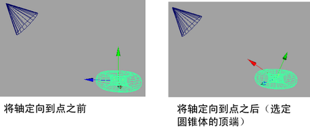

使用“工具设置”(Tool Settings)中的“设定为组件”(Set to Component)、“设置为点”(Set to Point)、“设置为边”(Set to Edge)和“设置为面”(Set to Face)命令，可以将变换工具的 X 轴定向到点、边或面。
注： 这些命令仅影响轴方向，而不影响枢轴位置。若要更改枢轴点的位置，请激活自定义枢轴编辑模式。
设置自定义轴方向
- 选择对象。
- 双击工具箱中的变换工具图标之一。
- 在显示的“工具设置”(Tool Settings)中，单击“自定义”(Custom)字段旁边的
 ，然后选择选项之一。
，然后选择选项之一。
此时将显示“方向操纵器”(Orient Manipulator)窗口。
- 执行下列操作之一：
- 选择一个顶点。
- 选择一个边。
- 选择一个面。
- 选择对象。
提示： 若要在另一个对象上进行选择，请先右键单击该对象，然后选择“多重”(Multi)。 - 操纵器 X 轴的方向根据选定的组件或对象更新：
- 操纵器 X 轴指向选定的顶点。

- 操纵器 X 轴沿选定边对齐。
- 操纵器 X 轴沿选定面的面法线对齐。
- 操纵器 X 轴对齐到另一个对象的轴方向。
- 操纵器 X 轴指向选定的顶点。